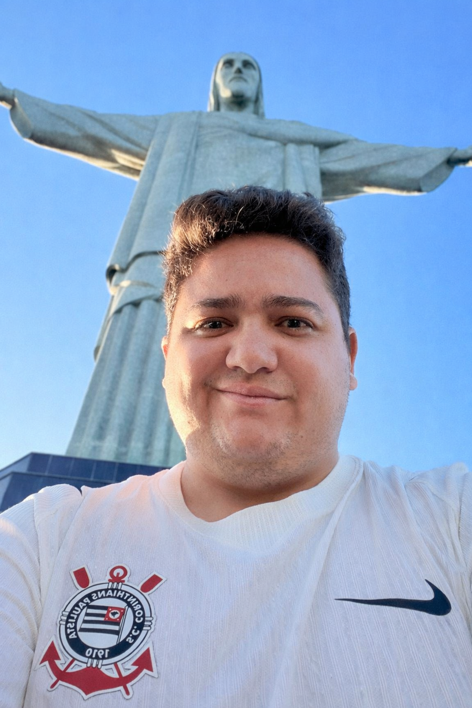

Emerson Dos Santo | WDD 130

Hello! My name is Emerson Dos Santos and I am from Sao Paulo, Brazil. I am one of three children and I am 28 years old. I am I enjoy playing football, playing videogames, and spending time with my family. I aspire to work in the Information Technology field someday. I served my mission in Recife, Brazil from 2017 - 2019. I got married last year in the Provo City Center Temple with the love of my life. Temples have a special place in my heart and the Provo City Center Temple is our favorite temple as a couple. Below are more of my favorite temples.